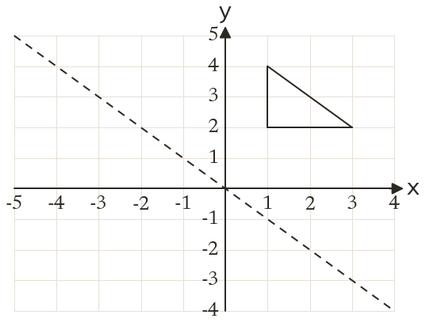
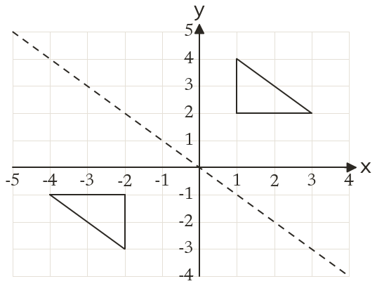

Westonbirt Maths · Transformations and Enlargements
Reflections and Rotations
Name: ______________________ Date: ____________
1
Reflect the triangle in the line y = -x. Write down the corners of the image.
2
Reflect the point (7, 2) in the line x = 4.
3
Reflect the point (-1, 5) in the line y = 2.
4
Reflect the point (4, -3) in the line y = -x.
5
A point P is reflected in the line x = -1 and lands on (3, 2). Find P.
6
Can a point be reflected in the line y = x and land where it started? Give an example.
Ext
The point (a, b) is reflected in y = x onto (2, -5). Find a and b, then reflect (2, -5) in x = 1.

